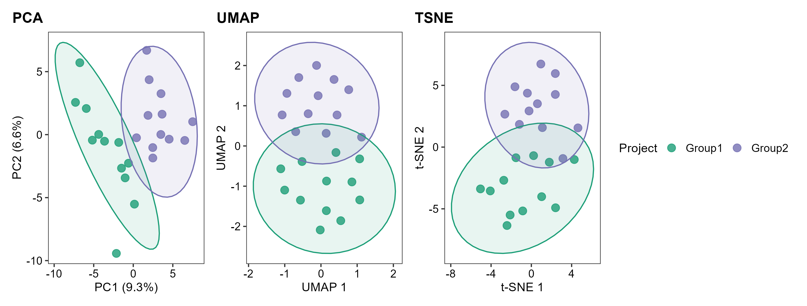
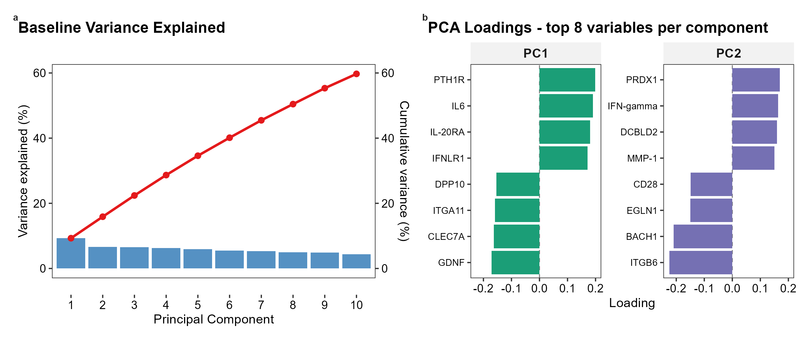
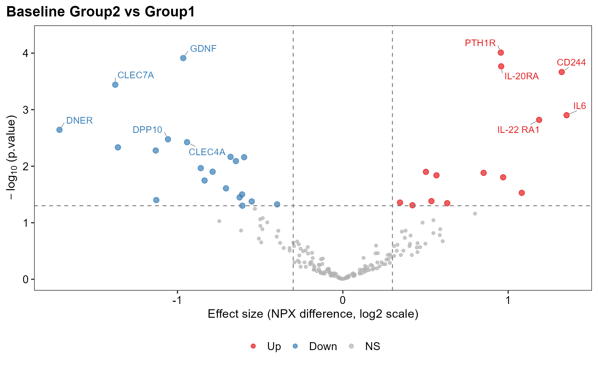
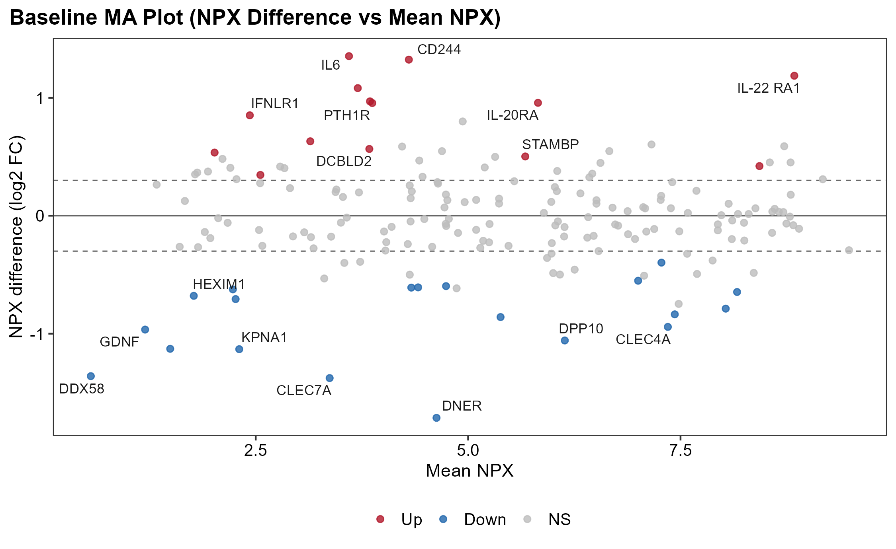
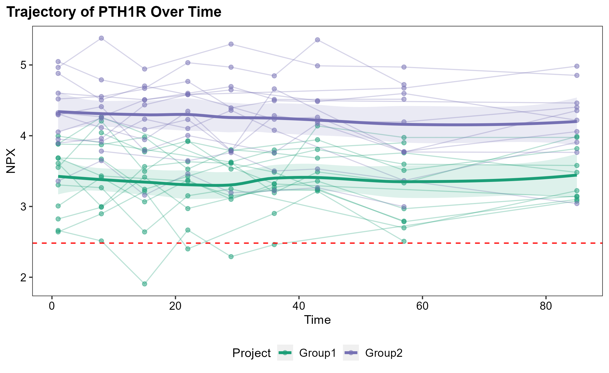

All OlinkViz Plots on One Dataset (probc)
OlinkViz Authors
2026-11-17
Source:vignettes/all_plots_one_dataset.Rmd
all_plots_one_dataset.RmdThis gallery runs every OlinkViz visualization on a
single cohort (probc: 26 subjects, 2
groups, 9 timepoints 1..85, 184 assays across 2 Olink
Target 96 panels, with PlateID, MaxLOD,
PlateLOD, and QC_Warning).
1. Preparing the single-cohort views
oe <- oe_from_long(probc)
base <- probc[probc$Timepoint == 1, ]
early_late <- probc[probc$Timepoint %in% c(1, 29, 85), ]
# Compute per-protein baseline differential expression (Group2 vs Group1)
dt_base <- as.data.table(base)
de_t1 <- dt_base[, {
g1 <- NPX[Project == "Group1"]
g2 <- NPX[Project == "Group2"]
tt <- tryCatch(stats::t.test(g2, g1), error = function(e) NULL)
list(
MeanNPX = mean(NPX, na.rm = TRUE),
estimate = mean(g2, na.rm = TRUE) - mean(g1, na.rm = TRUE),
conf.low = if (is.null(tt)) NA_real_ else tt$conf.int[1],
conf.high = if (is.null(tt)) NA_real_ else tt$conf.int[2],
p.value = if (is.null(tt)) NA_real_ else tt$p.value
)
}, by = .(Assay, Panel, UniProt)]
de_t1[, Adjusted_pval := stats::p.adjust(p.value, method = "BH")]
de_t1 <- de_t1[order(p.value)]
# Day 85 differential expression for cross-timepoint concordance & UpSet
dt_all <- as.data.table(probc)
de_by_tp <- function(tp) {
dt_all[Timepoint == tp, {
g1 <- NPX[Project == "Group1"]
g2 <- NPX[Project == "Group2"]
tt <- tryCatch(stats::t.test(g2, g1), error = function(e) NULL)
list(
est = mean(g2, na.rm = TRUE) - mean(g1, na.rm = TRUE),
p = if (is.null(tt)) NA_real_ else tt$p.value
)
}, by = Assay]
}
de_t29 <- de_by_tp(29)
de_t85 <- de_by_tp(85)
top_assays <- head(de_t1$Assay, 4)
top_assays
#> [1] "PTH1R" "GDNF" "IL-20RA" "CD244"2. Quality Control & Bridge Diagnostics


2.4 Bridge Sample Concordance (plot_bridge())
set.seed(42)
b_ref <- base
b_new <- base
b_new$NPX <- b_new$NPX + rnorm(nrow(b_new), mean = 0.08, sd = 0.15)
plot_bridge(b_ref, b_new, type = "bland_altman")

3. Dimensionality Reduction & Clustering
3.1 Joint PCA, UMAP, and t-SNE (plot_dim_reduc())
plot_dim_reduc(base, type = c("pca", "umap", "tsne"),
color = "Project", perplexity = 7, seed = 42)
3.2 Standalone PCA & UMAP via plot_dim_reduc()
p1 <- plot_dim_reduc(base, type = "pca", color = "Project", title = "Baseline PCA")
p2 <- plot_dim_reduc(base, type = "umap", color = "Project", n_neighbors = 8,
seed = 42, title = "Baseline UMAP")
if (requireNamespace("patchwork", quietly = TRUE)) {
olinkviz_combine(p1, p2, journal = "nature")
} else {
p1
}
3.3 PCA Scree (plot_scree()) & Loadings
(plot_loadings())
ps <- plot_scree(base, n_pcs = 10, title = "Baseline Variance Explained")
pl <- plot_loadings(base, components = 1:2, top_n = 8)
if (requireNamespace("patchwork", quietly = TRUE)) {
olinkviz_combine(ps, pl, journal = "nature")
} else {
pl
}
3.4 Clustered Heatmap (plot_heatmap())
oe_base <- oe[, colData(oe)$Timepoint == 1]
plot_heatmap(oe_base, scale = "row", show_rownames = FALSE,
annotation_rows = "Panel",
main = "Baseline NPX Heatmap (OlinkExperiment)")
3.5 Variance Partitioning
(plot_variance_partition())
plot_variance_partition(probc, factors = c("PPID", "Timepoint", "Project", "PlateID"),
type = "bars", top_n = 15)
4. Differential Expression, Intervals, Concordance & Set Overlap
4.1 Volcano Plot (plot_volcano())
plot_volcano(de_t1, pval_col = "p.value", fc_col = "estimate",
fc_threshold = 0.3, max_labels = 10,
title = "Baseline Group2 vs Group1")
4.2 MA Plot (plot_ma())
plot_ma(de_t1, mean_col = "MeanNPX", fc_col = "estimate",
pval_col = "p.value", fc_threshold = 0.3, max_labels = 8,
title = "Baseline MA Plot (NPX Difference vs Mean NPX)")
4.3 Multi-Protein Dot Plot (plot_dotplot())
plot_dotplot(base, group = "Project",
assays = head(de_t1$Assay, 15),
title = "Top 15 Baseline Assays (Group2 vs Group1)")
4.4 Effect-Size Forest Plot (plot_forest())
de_top <- head(de_t1, 14)
de_top[, sig := p.value < 0.05]
plot_forest(de_top, assay_col = "Assay", estimate_col = "estimate",
lower_col = "conf.low", upper_col = "conf.high",
sig_col = "sig", title = "Top 14 Baseline Proteins (95% CI)")
4.5 Cross-Timepoint Effect Concordance
(plot_concordance())
conc_dt <- merge(
de_t1[, .(Assay, Day1 = estimate)],
de_t85[, .(Assay, Day85 = est)],
by = "Assay"
)
plot_concordance(conc_dt, x_col = "Day1", y_col = "Day85",
xlab = "Day 1 effect (Group2 - Group1)",
ylab = "Day 85 effect (Group2 - Group1)",
title = "Concordance of Treatment Effects (Day 1 vs Day 85)")
4.6 Overlapping Protein Sets (plot_upset())
sets <- list(
"Day 1 (p < 0.1)" = de_t1[p.value < 0.1]$Assay,
"Day 29 (p < 0.1)" = de_t29[p < 0.1]$Assay,
"Day 85 (p < 0.1)" = de_t85[p < 0.1]$Assay
)
plot_upset(sets, title = "Overlap of Differentially Abundant Proteins Across Visits")
5. Single-Protein & Longitudinal Views
5.1 Boxplot (plot_boxplot())
plot_boxplot(base, assay = top_assays[1:2], group = "Project",
show_lod = TRUE, show_significant = TRUE)
5.2 Violin + Boxplot (plot_violin())
plot_violin(early_late, assay = top_assays[1], x = "Timepoint",
group = "Project", show_lod = TRUE,
compare_groups = TRUE, test = "t.test",
show_p_value = TRUE, show_overall = TRUE)
5.3 Mean Profile (plot_mean_profile())
plot_mean_profile(probc, assay = top_assays[1:2], x = "Timepoint",
group = "Project", show_lod = TRUE)
5.4 Individual Trajectories (plot_trajectory())
plot_trajectory(probc, assay = top_assays[1], subject_id = "PPID",
time = "Time", group = "Project", smooth_method = "loess",
lod_col = "MaxLOD")
5.5 Faceted Spaghetti Plot (plot_spaghetti())
plot_spaghetti(probc, assay = top_assays[1], subject_id = "PPID",
time = "Time", facet_by = "Project")
5.6 Linear Mixed-Model Point-Range (plot_lmer())
plot_lmer(early_late, assay = top_assays[1:2], x = "Timepoint",
group = "Project", random = "PPID",
add_pvalue = requireNamespace("lmerTest", quietly = TRUE))
5.7 Continuous Regression Smooth
(plot_regression())
plot_regression(probc, assay = top_assays[1], x = "Time",
color_by = "Project", title = paste(top_assays[1], "Trend"))
6. Correlation, Biomarker ROC, and Pathway Network
6.1 Correlation Matrix (plot_corr() &
plot_corr_triangle())
plot_corr(base, method = "spearman", top_n = 18, corr_type = "upper")
plot_corr_triangle(base, method = "spearman", top_n = 15,
title = "Baseline Correlation Triangle")
6.2 ROC Curves with 95% CI Shade & DeLong Comparison
(plot_roc())
plot_roc(base, assays = top_assays[1:3], group = "Project",
add_ci = TRUE, boot_n = 100, show_direction = TRUE,
compare = TRUE, compare_method = "delong",
palette = "okabe_ito",
title = "Baseline Classification (95% CI & DeLong Test)")
6.3 Pathway / Panel Network
(plot_pathway_network())
pw_panel <- unique(de_t1[, .(Assay, Pathway = gsub("Olink ", "", Panel))])
plot_pathway_network(de_t1, assay_col = "Assay", value_col = "estimate",
pathway_map = as.data.frame(pw_panel), top_n = 16,
palette = "jewel",
title = "Top Baseline Proteins Grouped by Olink Panel")
6.4 STRING Protein Interaction Networks & Functional Enrichment
net_tmp <- tempfile("strnet_all_")
dir.create(net_tmp, recursive = TRUE, showWarnings = FALSE)
old_wd <- setwd(net_tmp)
str_genes <- unique(c(head(de_t1$Assay, 12), "IL6", "CXCL12", "IL4", "TNF"))
enr_str <- tryCatch({
mapped <- rbioapi::rba_string_map_ids(ids = str_genes, species = 9606)
if (nrow(mapped) > 0) {
rbioapi::rba_string_network_image(
ids = mapped$stringId, image_format = "image", species = 9606,
save_image = TRUE, required_score = 500, network_flavor = "confidence"
)
rbioapi::rba_string_network_image(
ids = mapped$stringId, image_format = "image", species = 9606,
save_image = TRUE, required_score = 500,
add_color_nodes = 5, add_white_nodes = 5, network_flavor = "actions"
)
rbioapi::rba_string_enrichment(ids = mapped$stringId, species = 9606)
} else NULL
}, error = function(e) NULL)
setwd(old_wd)
imgs <- sort(list.files(file.path(net_tmp, "rbioapi"), pattern = "\\.png$", full.names = TRUE))
if (length(imgs) >= 1) file.copy(imgs[1], "all_string_confidence.png", overwrite = TRUE)
if (length(imgs) >= 2) file.copy(imgs[2], "all_string_neighborhood.png", overwrite = TRUE)